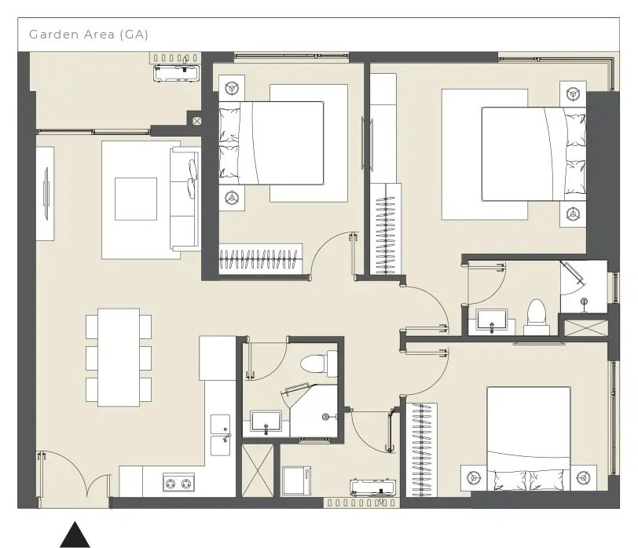
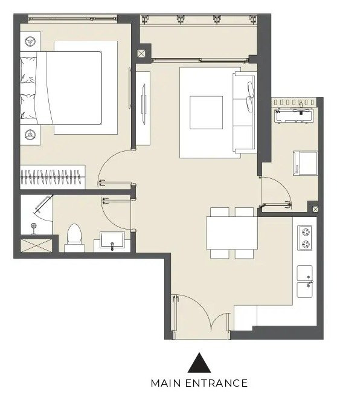
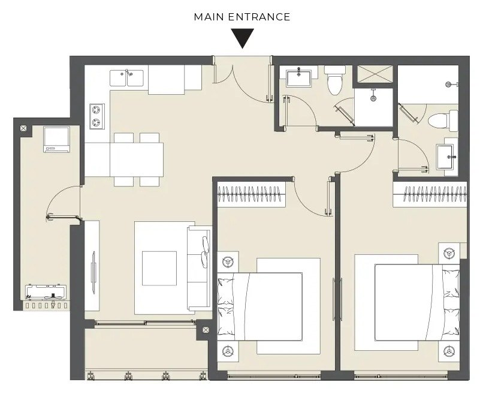
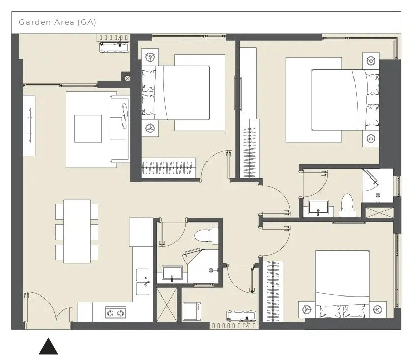
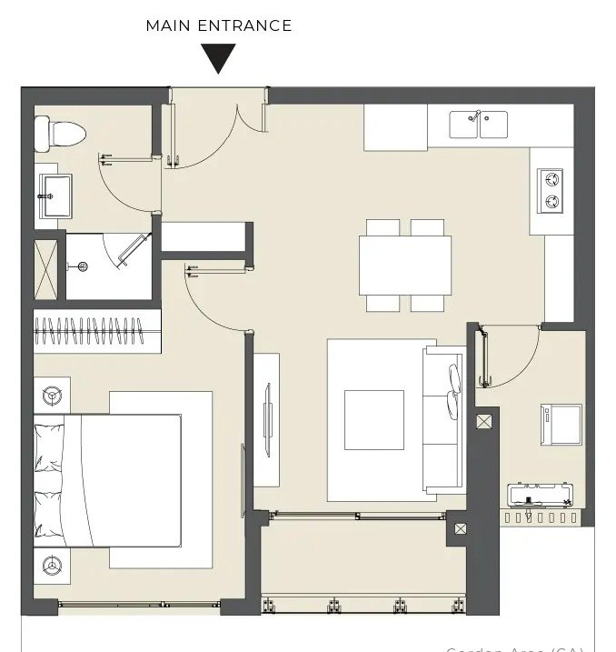
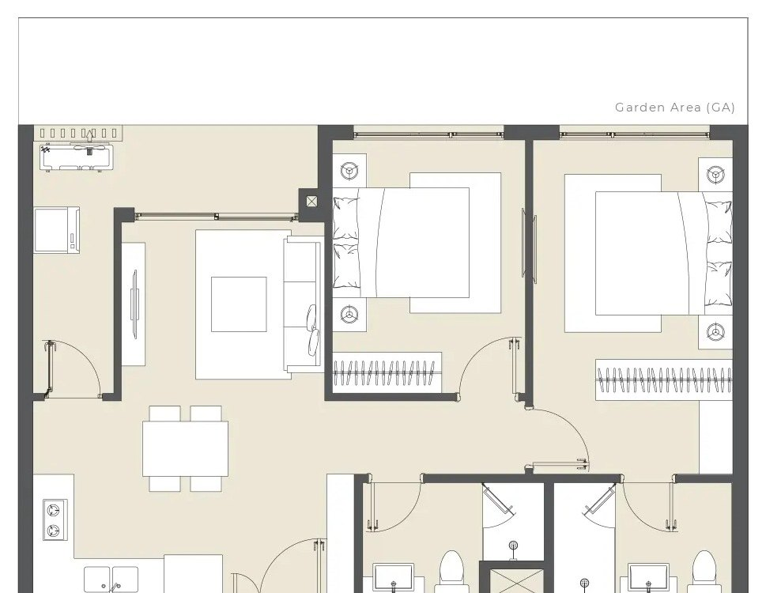
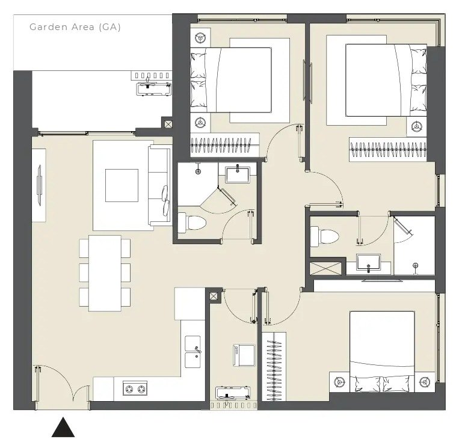

Lumière Riverside (An Phú, Thủ Đức): thông tin dự án và 6 mặt bằng căn hộ

1. Tóm tắt nhanh
Xa lộ Hà Nội
đã thu thập
khác nhau rõ rệt
Lumière Riverside là dự án căn hộ của Masterise Homes tại 628 Xa lộ Hà Nội, phường An Phú, TP. Thủ Đức (Quận 2 cũ). Dự án khởi công cuối năm 2020, cất nóc tháng 3/2023 và bàn giao cho cư dân từ tháng 9/2023. Bài này tổng hợp 6 mặt bằng căn hộ đã thu thập.
| Hạng mục | Thông tin |
|---|---|
| Tên dự án | Lumière Riverside (Thảo Điền) |
| Chủ đầu tư | Masterise Homes |
| Địa chỉ | 628 Xa lộ Hà Nội, phường An Phú, TP. Thủ Đức |
| Tiến độ | Khởi công cuối 2020; cất nóc 1/3/2023; bàn giao 9/2023 |
| Quy mô | Khoảng 1.030 căn (theo một nguồn) |
| Giá tham khảo | Giá rao thứ cấp khoảng 102–149 triệu/m² |
| Giá bán chính thức | Chưa có bảng giá chính thức trong bài; xem mục 5 |
2. Vị trí
Dự án nằm tại Xa lộ Hà Nội, An Phú, Thủ Đức. Bài chỉ nêu thông tin công bố, không đánh giá vị trí.
3. Sản phẩm
Bảng dưới đây liệt kê toàn bộ mặt bằng đã thu thập; những mẫu có diện tích gần như trùng nhau được ghi chú “cùng mặt bằng”, và phần hình chỉ đặt các mặt bằng khác nhau. Diện tích có thể khác nhau tùy nguồn (tim tường hay thông thủy); cột trống nghĩa là tài liệu không công bố.
| Loại / mã | Số PN | Tim tường (m²) | Thông thủy (m²) | Ghi chú |
|---|---|---|---|---|
| 01 | 1 | 49,4 | 43,9 | |
| 05 | 2 | 74,2 | 67,7 | |
| 11 | 3 | 96,4 | 87,6 | |
| 05 | 1 | 51,6 | 46,2 | |
| 10 | 2 | 74,2 | 67,4 | |
| 02 | 3 | 92,7 | 83,7 |
Căn hộ 1 phòng ngủ

Căn hộ 2 phòng ngủ

Căn hộ 3 phòng ngủ

Căn hộ 1 phòng ngủ

Căn hộ 2 phòng ngủ

Căn hộ 3 phòng ngủ

4. Tiện ích và thiết kế
Thông tin tiện ích chi tiết xem trang chính thức của dự án; bài này tập trung vào mặt bằng căn hộ.
5. Giá tham khảo (gần đúng)
| Nguồn / loại căn | Mức giá | Ghi chú |
|---|---|---|
| Giá rao (5/2025) | 105–110 triệu/m² | |
| Giá rao (nguồn 2026) | 102–149 triệu/m² | Tăng dần theo thời gian |
| Penthouse 269 m² | 249 triệu/m² | Giá rao |
Giá rao thứ cấp quanh 100–150 triệu/m²; chưa tìm thấy giá khi mở bán ban đầu.
6. Tiến độ và nguồn cung
- Chưa có thông tin chính thức trong bài: số căn từng mẫu, bảng giá hiện hành và tiến độ chi tiết; hãy hỏi chủ đầu tư.
7. Kết luận
Bài tổng hợp các mặt bằng đã công bố của Lumière Riverside (Thảo Điền) để dễ đối chiếu. Khi cân nhắc một căn cụ thể, hãy xác nhận mã căn, diện tích tim tường và thông thủy và giá hiện hành với chủ đầu tư.